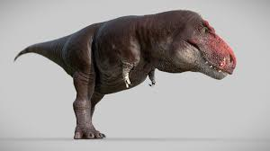

O Tiranossauro Rex foi um dos maiores carnívoros da história, medindo até 12 metros de comprimento. Vivendo no fim do período Cretáceo, ele dominava seu ecossistema com pernas musculosas e sentidos apurados. Sua característica mais marcante era a mandíbula devastadora, equipada com dentes do tamanho de bananas. Apesar do porte colossal e força bruta, o "rei dos dinossauros" possuía braços surpreendentemente curtos.